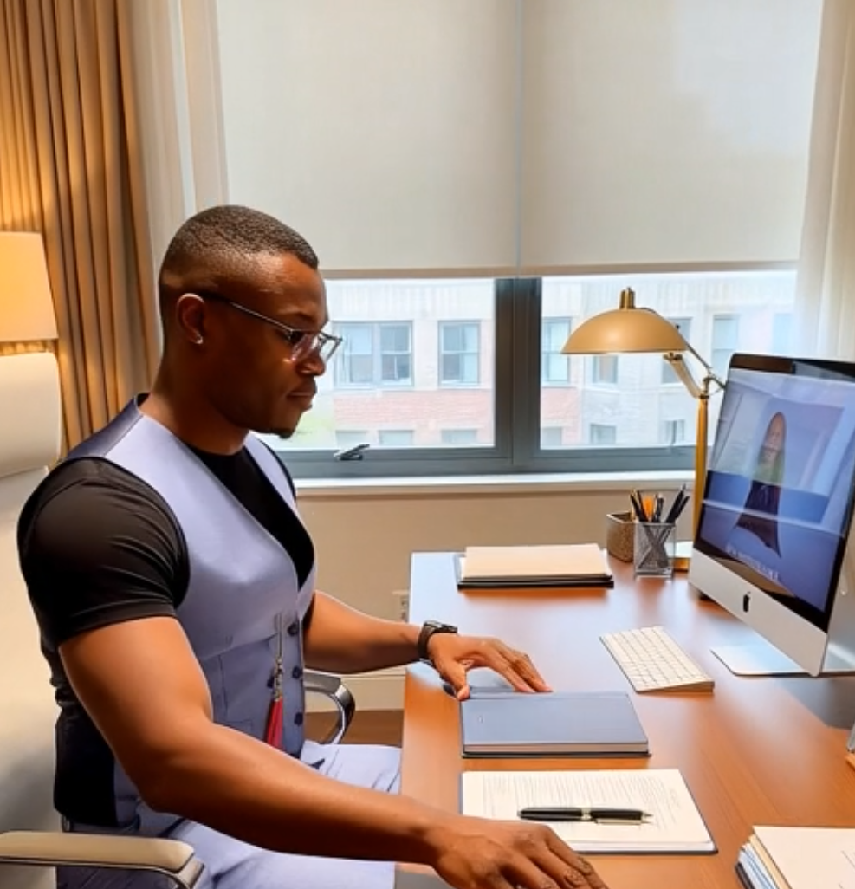

The developer behind Frost Travel
From embedded firmware to data pipelines to my own small businesses, I build things that add real value to people's lives, one person at a time.

- Based inSarasota, Florida
- Current roleData Analyst, Junior Achievement
- StudyingM.S. AI & Business Analytics
- LanguagesFrench, English
Hi, I'm Freeman Talla
I'm a Data Analyst at a local nonprofit, where I build Blackbaud CRM dashboards and a Python pipeline that reconciles donor data with Sage Intacct for month-end accounting.
I'm working on my third master's degree, an M.S. in AI & Business Analytics with a FinTech concentration at the University of South Florida (expected May 2027). In December 2024 I finished two STEM master's degrees at USF, in Computer Science and in Entrepreneurship in Applied Technologies. Before that I earned a B.S. in Electrical Engineering Technology, with a minor in Computer Science, from Kennesaw State University.
My engineering career started at Carrier, where I spent three years as an embedded firmware engineer on building-safety products sold by the millions each year in the US and EU. I later interned at Jabil building low-cost PLC evaluation systems.
Outside of work I build websites for my own businesses: two designed in Canva, for my tutoring service and my car rental business, and one hand-coded in JavaScript and hosted on GitHub Pages with the help of AI. Frost Travel is the most complete one so far.
Experience
-
January 2026 to now
Local non-Profit
Partnership Engagement Manager & Data Analyst. CRM analytics with OData, a Blackbaud to Sage Intacct reconciliation pipeline in Python, and partnerships for the 3DE Sarasota County expansion.
-
November 2021 to May 2025
University of South Florida
Graduate Teaching Assistant for Computer Architecture and Computer Networks, mentoring 150+ students.
-
May to July 2023
Jabil
PLC Engineering Intern. Built a PLC evaluation system with OpenPLC and Codesys showing 40% potential cost savings.
-
June 2018 to June 2021
Carrier Corporation
Embedded Firmware Engineer. Led the redesign of analog addressable I/O modules, protecting a $10M+ annual product line.
Education
- M.S. AI & Business Analytics, FinTechUniversity of South Florida, expected May 2027, GPA 3.98
- M.S. Computer ScienceUniversity of South Florida, December 2024, GPA 3.96
- M.S. Entrepreneurship in Applied TechnologiesUniversity of South Florida, December 2024, GPA 4.0
- B.S. Electrical Engineering TechnologyKennesaw State University, May 2021, GPA 4.0
Certifications
- SnowPro Associate: PlatformSnowflake, October 2025
- Engineer-In-TrainingState of Georgia, June 2018
How I built this website
I wanted a travel site that does something useful with data instead of only showing pretty pictures. The niche came from a contrast I live every day: Floridians who have never seen snow, and some of the darkest, coldest places on Earth. Aurora travel depends on one number more than any other, hours of real darkness, so that became the thread through every page.
I built the site with an AI assistant as a pair programmer, then read and edited every file myself so I understand how each part works. The biggest lessons were how much a consistent set of CSS variables speeds up design, how <dialog> and aria-* attributes make interactions accessible for free, and how keeping all data in one file lets four pages stay in sync.
My process
- Research the data.
Tourism statistics from the Icelandic Tourist Board and IAATO, climate normals, and a solar formula for darkness hours.
- Plan pages and data.
Four pages sharing three "tables" in
js/data.js: destinations, trips and bookings. - Design the system.
Color and type tokens as CSS variables, one stylesheet for every page.
- Write semantic HTML.
Header, nav, main, section and footer, with the same menu on every page.
- Add interactivity.
Vanilla JavaScript for the trip finder, CRUD form and charts.
- Test and publish.
Checked phone, tablet and desktop layouts, keyboard navigation and load speed, then deployed with GitHub Pages.
Technologies used
| Technology | What it does here |
|---|---|
| HTML5 | Semantic page structure, forms with built-in validation, the native <dialog> element. |
| CSS3 | Custom properties, Grid and Flexbox layouts, clamp() for fluid type, media queries for mobile. |
| JavaScript | DOM rendering, event listeners, array filter/map/sort, localStorage and URL parameters. |
| Chart.js 4 | Line and bar charts on the Analytics page, loaded only on that page. |
| SVG | All illustrations are original vector files, a few kilobytes each, so pages load fast. |
| Google Fonts | Bricolage Grotesque for headings and Instrument Sans for text. |
| Git & GitHub Pages | Version control and free static hosting. |
Project files
Assignment_LookAndFeel/ ├── index.html Home + trip finder ├── aboutus.html This page ├── managebookings.html CRUD form ├── analytics.html Chart.js dashboard ├── css/ │ └── style.css One stylesheet ├── js/ │ ├── data.js Shared data "tables" │ ├── main.js Menu + messages │ ├── home.js Trip finder │ ├── bookings.js Create, read, │ │ update, delete │ └── analytics.js Charts └── img/ SVG illustrations
Everything the site needs lives in this repository. Browse the source code.